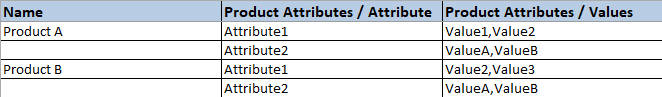

Import products¶
Odoo Sales provides a template for importing products with categories and variants, which can be opened and edited with any spreadsheet software (Microsoft Excel, OpenOffice, Google Sheets, etc.).
When this spreadsheet is filled out properly, it can be quickly uploaded to the Odoo database. When uploaded, those products are instantly added, accessible, and editable in the product catalog.
Import template¶
In order to import products with categories and variants, the Import Template for Products must be downloaded. Once downloaded, the template can be adjusted and customized, and then uploaded back into the Odoo database.
To download the necessary import template, navigate to . On the Products page, click the “favorites” in the upper-left corner. Doing so reveals a drop-down menu.
From this drop-down menu, select the Import records option.
Selecting Import records reveals a separate page with a link to download the Import Template for Products. Click that link to download the template.

Once the template download is complete, open the spreadsheet file to customize it.
Customize product import template¶
When the import template has been downloaded and opened, it’s time to modify its contents. However, before any changes are made, there are a few elements to keep in mind during the process:
Feel free to remove any columns that aren’t deemed necessary. But, it is strongly advised that the Internal Reference column remains.
While it’s not mandatory, having a unique identifier (e.g.
FURN_001) in the Internal Reference column for each product can be helpful in many cases. This can even be from previous software spreadsheets to ease the transition into Odoo.For example, when updating imported products, the same file can be imported several times without creating duplicates, thus enhancing the efficiency and simplicity of imported product management.
Do not change the labels of columns that are meant to be imported. Otherwise, Odoo won’t recognize them, forcing the user to map them on the import screen manually.
Feel free to add new columns to the template spreadsheet, if desired. However, to be added, those fields must exist in Odoo. If Odoo can’t match the column name with a field, it can be matched manually during the import process.
During the import process of the completed template, Odoo reveals a page showcasing all the elements of the newly-configured product template spreadsheet, separated by File Column, Odoo Field, and Comments.
To manually match a column name with a field in Odoo, click the Odoo Field drop-down menu next to the File Column that needs a manual adjustment, and select the appropriate field from that drop-down menu.

Import product template spreadsheet¶
After customizing the product template spreadsheet, return to the Odoo product import page, where the template download link is found, and click the Upload File button in the upper-left corner.
Then, a pop-up window appears, in which the completed product template spreadsheet file should be selected and uploaded to Odoo.
After that, Odoo reveals a page showcasing all the elements of the newly-configured product template spreadsheet, separated by File Column, Odoo Field, and Comments.

From here, the File Column can be manually assigned to an Odoo Field, if necessary.
To make sure everything is appropriate, and all the columns and fields are lined up accurately, click the Test button in the upper-left corner.
If everything is lined up and applied correctly, Odoo reveals a blue banner at the top of the page, informing the user that Everything seems valid.
If there are any errors, Odoo reveals a red banner at the top of the page, with instructions of where to locate the specific issues, and how to fix them.
Once those errors are fixed, click Test again to ensure all necessary issues have been remedied appropriately.
If additional product template spreadsheets need to be uploaded, click the Load File button, select the desired product template spreadsheet, and repeat the process.
When everything is ready, click the Import button.
When clicked, Odoo instantly imports those products, and reveals the main Products page, with a pop-up message in the upper-right corner. This pop-up message informs the user how many products were successfully imported.
At this point, all the newly-imported products are accessible and editable via the Products page.
Import relation fields, attributes, and variants¶
It’s important to note that an Odoo object is always related to many other objects. For example, a product is linked to product categories, attributes, vendors, and things of this nature. These links/connections are known as relations.
Note
In order to import product relations, the records of the related object must be imported first from their own list menu.
Relation fields¶
On product forms in Odoo, there are a number of fields that can be modified and customized at any time. These fields are found under every tab on a product form. While these fields are easily editable directly on the product form, they can also be modified via a product import.
As mentioned, relation fields of this nature can only be imported for products if they already exist in the database. For example, if a user attempts to import a product with a Product Type, it can only be one of the preconfigured product types existing in the database (e.g. Storable Product, Consumable, etc.).
To import information for a relation field on a product import template spreadsheet, add the name of the field as a column name/title on the spreadsheet. Then, on the appropriate product line, add the desired relation field option.
When all desired relation field information has been entered, save the spreadsheet, and import it to the database, per the process mentioned above ().
Once the spreadsheet with the newly-configured relation field information has been uploaded, click Import, and Odoo returns to the Products page.
When the newly-changed/modified products, complete with the new relation field information, has been imported and uploaded, that new information can be found on the Products page.
Attributes and values¶
Odoo also allows users to import product attributes and values that can be used for products that already exist in the database, and/or with imported products.
To import attributes and values, a separate spreadsheet or CSV file dedicated to attributes and values must be imported and uploaded before they can be used for other products.
The column names/titles of the attributes and values spreadsheet should be as follows: Attribute, Display Type, Variant Creation Mode, and Values / Value.

Attribute: name of the attribute (e.g.
Size).Display Type: display type used in the product configurator. There are three display type options:
Radio: values displayed as radio buttons
Selection: values displayed in a selection list
Color: values denoted as a color selection
Variant Creation Mode: how the variants are created when applied to a product. There are three variant creation mode options:
Instantly: all possible variants are created as soon as the attribute, and its values, are added to a product
Dynamically: each variant is created only when its corresponding attributes and values are added to a sales order
Never: variants are never created for the attribute
Note
The Variants Creation Mode cannot be changed once the attribute is used on at least one product.
Values/Value: values pertaining to the corresponding attribute. If there are multiple values for the same attribute, the values need to be in individual lines on the spreadsheet.
Once the desired attributes and values have been entered and saved in the spreadsheet, it’s time to import and upload it into Odoo. To do that, navigate to .
Once the spreadsheet with the newly-configured attributes and values has been uploaded, click Import, and Odoo returns to the Attributes page. That’s where those newly-added attributes and values can be found and edited, if necessary.
As mentioned previously, when attributes and values have been added to the Odoo database, they can be used for existing or imported products.
Product variants¶
When product attributes and values are configured in the database, they can be used on product import spreadsheets to add more information and detail to products being imported.
To import products with product attributes and values, the product import template spreadsheet must be configured with specific Product Attributes / Attribute, Product Attributes / Values, and Name columns.
There can be other columns, as well, but these columns are required in order to properly import products with specific variants.
Name: product name
Product Attributes / Attribute: name of attribute
Product Attributes / Values: values pertaining to the corresponding attribute
Tip
To import multiple values, separate them by just a comma, not a comma followed by a space,
in the product import template spreadsheet (e.g. furniture,couch,home).
When the desired products and product variants have been entered and saved in the spreadsheet, it’s time to import and upload them into Odoo. To do that, navigate to .
Once the spreadsheet with the newly-configured products and product variants has been uploaded, click Import, and Odoo returns to the Products page. That’s where the newly-added products can be found.
To view and modify the attributes and variants on any products, select the desired product from the Products page, and click the Attributes & Variants tab.
See also